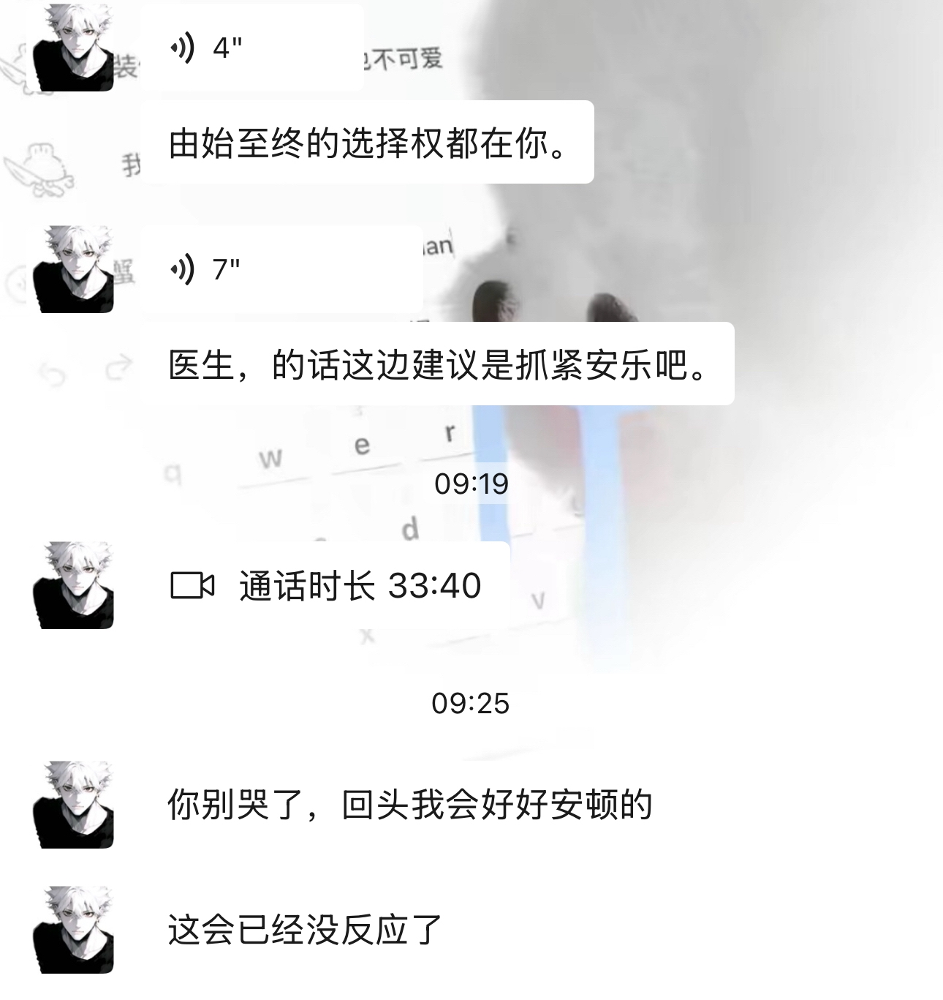

江一燕不好意思我还是选杨蓉
男人看女人和女人看女人果然不一样[抠鼻]
这球是洛夫顿故意的 当时直播时都看到了
他的认知体系构建得简直无坚不摧，完美闭环。好在他是个成功人士，至少说明他的大部分观念是很适配社会环境的，不然就是一个固执的中年老男人[泪奔]
他的教育理念不一定能培养出天才，但大概率能培养出世俗意义上的精英，很现实很功利又很实用的教育理念
本集为刘煜暄系列第4集，前3集在合集里，第5集刘煜暄聊情感下下周更。之所以想跟刘煜暄聊育儿，是因为我知道他过去三年每天雷打不动地花三小时辅导孩子作业，如果你曾经辅导过孩子作业，你就能明白这对人是一种怎样的消耗。
说到辅导作业，这张图无比形象[泪奔][泪奔]
刘煜宣其实属于极度自信的男生，挺好玩的，哈哈哈哈，但是他儿子以后肯定永远在他的光辉下，至少在自信这块肯定挺难超越他的[泪奔][泪奔][泪奔]
虽然言语风格不一样，但是他说的和复旦社会学教授沈奕斐主张的家庭教育就是情感支持和人格培养，内核是完全一致的！佩服佩服
弹幕在说爹味，但是我觉得他每天花那么多时间陪伴小孩，比起很多男的已经很好的，很多男的甚至在妈妈教育小孩时拖后腿，该参与时就隐形，该安慰就开始爹味批评说风凉话
你问：你一直说你们家族你们家族，你们家族到底有几个人，，，我真的差点笑喷了
一看这个律师说话的语速和力道就知道他是一个精力特别旺盛内核稳定的人，普通人多说两句话多干点活身体虚的不行只会更加怀疑自己，根本学不了做不到[捂脸]
一种新型教育方式出现了：鸡心[看]
加油，永远支持你！哪个比赛你不去你说一声，我也想拿冠军[流泪]
新成员吗[舔屏]
怎么多了一只大土豆子[宕机]
我记得公主不是不喜欢被抱着吗
园长是真好看[色]
在这期有土豆哦[猪头][猪头]
提问，园长频繁发视频，证明什么？证明她已经意识到自己的颜值了[呲牙]
为啥就我被扯脸捏[捂脸]
以后孩子们的作文就只能写:春天来了，柳树没有新芽，光溜溜的枝条在风中笨拙地晃动……
特别是校学办公室，夜晚千万不能去！切记！！[感谢][感谢][感谢]
视频里说的这些地方，只要在身上带上纯阳之物，就不会害怕。纯阳之物：硫磺，炸药，炸弹，手雷，枪。这些都属于纯阳之物[灵机一动][灵机一动][灵机一动][灵机一动]
红色衣服那位大哥一看就是在等施展才华的时刻
洪世贤的嘴比三观正[呲牙][呲牙][呲牙]
我家隔壁一个婆婆86岁，年轻时结婚4个多月男的出意外不在了也没得孩子，她和我爷爷说寿衣一直放在床边，每三天洗一次澡怕死了身上脏没得人愿意给她擦身子换衣服，2020年我爸回老家砌房子时顺便把她的两间土房子推了砌了两间砖瓦平房，砌了个室内洗澡间和厕所[泪奔][泪奔][泪奔]，可惜去年3.10号她去世了，我妈妈给她擦的身子换的衣服
谁能告诉我，人活这一辈子到底为了什么[微笑]
想到了这个[赞]

有没有一种可能.她穿的是寿衣，她怕突然走了，离世咯，身边没人发现.提前穿上.这是多么无助啊[泣不成声]
这个奶奶已经去世了，其实奶奶的儿子就住在隔壁，奶奶不愿意和孩子住，奶奶的这件红色衣服并不是寿衣，奶奶比较爱美，喜欢穿红色衣裳
最近不知道为什么有了死亡恐惧，我才二十五岁。一到晚上睡觉就想到如果自己死了，没有意识了，就感觉好恐怖。搞得这几天状态很差。[裂开]
我爷爷瘫痪五个多月，走的时候手里都是屎，我半夜到老家，第二天给他擦洗了脸和手，邻居还问我手里是不是屎，我说是，火化前我看脚上连鞋都没穿，又去买的鞋给他穿上，晚上我大伯扛不住冻守灵到半夜就回家了，儿孙满堂却只有我这个孙女守着！[泣不成声]
人一旦去世了，你生前穿过的衣服，盖过的被子，睡过的床，坐过的凳子，用过的洗刷用品，我会被你的亲人后代通通扔进垃圾桶，。活着的时候省吃俭用，小心收藏或者舍不得扔掉的所有东西，家人都会不眨眼处理掉，啥都不会留，除了这个房和钱。三代以后，时间会抹平一切，你存在过的痕迹，你的子孙后代大概率都不知道你的名字。生不带来一片云彩，走也带不着一片砖瓦，能带走的只有你自己，还有你的脾气。人这一生，走着走着就老了，老着老着就没了。所以一定要好好活着，好好爱自己，珍惜每一天。该吃吃，该喝喝，遇事别往心里搁。
杨鸣，刘维伟一对襟兄弟，[呲牙][呲牙][呲牙]
去练欧阳春晓[憨笑]每天十几分钟真的有用
我做了3天了，富贵包都有点软了，看看这次能练下去不
建议我们加到105，无论你出多少，我都比你多1[灵机一动]
我给憋成新生儿了……
我的喵一个月回家一次[捂脸]
强者从来不花里胡哨
我还以为麻子哥，原来哭错坟了， 再一看是李存礼，哭的更惨了[快哭了][快哭了][快哭了]
大哥我好想你[流泪]你不在 ，他们都打我[流泪]跳起来打[流泪]
我还以为是我麻子哥
“这次怎么是一个人来的”
突然想到这个[泣不成声]
“人，这次怎么是一个人？”
“人，你闻起来苦苦的”

在感情里早就不流行道歉了 他们会等时间过去 然后问你一句在干嘛
亲爱的妈妈 以后回家的路上不会车没电了 也不会有朋友突然生日了
缘分尽了
前对象哈哈哈哈哈哈笑死了

他连你都不在意，还在意一只小猫吗
他不喜欢猫 我喜欢 每次和他走在路上遇到流浪猫我都会逗一逗 他不在的时候我会发给他 直到后来他也开始给我分享…
他也知道你们分开了
那天我又遇见了可爱的小猫 但我不想告诉你了
这个音乐配上这个文案让人好难受
可惜我当初拍给你的小猫你也是淡淡的扫了一眼
一起养了两年的狗狗犬瘟最后在前任怀里走的 
其实对方也不感兴趣[好开心]
咪:人，风吹来了你的味道闻起来苦苦的
Read more: